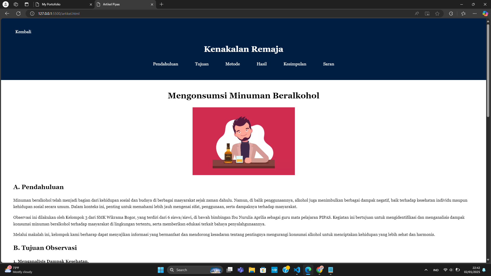

Mengonsumsi Minuman Beralkohol

A. Pendahuluan
Minuman beralkohol telah menjadi bagian dari kehidupan sosial dan budaya di berbagai masyarakat sejak zaman dahulu. Namun, di balik penggunaannya, alkohol juga menimbulkan berbagai dampak negatif, baik terhadap kesehatan individu maupun kehidupan sosial secara umum. Dalam konteks ini, penting untuk memahami lebih jauh mengenai sifat, penggunaan, serta dampaknya terhadap masyarakat.
Observasi ini dilakukan oleh Kelompok 3 dari SMK Wikrama Bogor, yang terdiri dari 6 siswa/siswi, di bawah bimbingan Ibu Nurulia Aprilia sebagai guru mata pelajaran PIPAS. Kegiatan ini bertujuan untuk mengidentifikasi dan menganalisis dampak konsumsi minuman beralkohol terhadap masyarakat di lingkungan tertentu, serta memberikan edukasi terkait bahaya penyalahgunaannya.
Melalui makalah ini, kelompok kami berharap dapat menyajikan informasi yang bermanfaat dan mendorong kesadaran tentang pentingnya mengurangi konsumsi alkohol untuk menciptakan kehidupan yang lebih sehat dan harmonis.
B. Tujuan Observasi
1. Menganalisis Dampak Kesehatan.
Menyusun pemahaman mengenai efek fisik dan mental dari konsumsi alkohol, baik dalam jangka pendek maupun jangka panjang, serta pengaruhnya terhadap kesehatan individu.
2. Mengidentifikasi Dampak Sosial.
Menyediakan informasi mengenai dampak sosial yang timbul dari konsumsi alkohol, seperti gangguan dalam hubungan interpersonal, kekerasan, dan pelanggaran hukum terkait penggunaan alkohol.
3. Mengeksplorasi Persepsi Masyarakat.
Mengamati pandangan dan sikap masyarakat terhadap minuman beralkohol, serta faktor-faktor yang memengaruhi keputusan individu untuk mengonsumsi alkohol.
4. Memberikan Edukasi kepada Masyarakat.
Menyampaikan pentingnya pengendalian konsumsi alkohol untuk menjaga kesehatan dan kesejahteraan sosial, serta memberikan rekomendasi untuk mengurangi dampak negatifnya di masyarakat.
C. Metode
Menyampaikan pentingnya pengendalian konsumsi alkohol untuk menjaga kesehatan dan kesejahteraan sosial, serta memberikan rekomendasi untuk mengurangi dampak negatifnya di masyarakat.
D. Hasil Observasi
1. Faktor Penyebab:
Pengaruh lingkungan teman sebaya yang memiliki kebiasaan mengonsumsi alkohol.
Kurangnya pengawasan dari orang tua.
Stres atau tekanan dalam kehidupan sehari-hari.
Mudahnya akses untuk mendapatkan minuman beralkohol.
2. Dampak Negatif:
Gangguan kesehatan, seperti kerusakan hati dan penurunan fungsi otak.
Penurunan prestasi akademik.
Potensi terlibat dalam tindakan kriminal, seperti perkelahian atau pencurian.
Ketergantungan alkohol yang sulit diatasi.
3. Upaya Pencegahan:
Meningkatkan kesadaran remaja tentang bahaya alkohol melalui pendidikan.
Memberikan pengawasan dan dukungan emosional dari keluarga.
Mengurangi akses remaja terhadap minuman beralkohol dengan regulasi yang ketat.
Melibatkan remaja dalam kegiatan positif, seperti olahraga atau komunitas sosial.
E. Kesimpulan
Konsumsi minuman beralkohol di kalangan remaja merupakan masalah serius yang memerlukan perhatian semua pihak. Dengan pemahaman yang baik tentang penyebab dan dampaknya, serta implementasi langkah-langkah pencegahan yang tepat, diharapkan perilaku ini dapat diminimalisir.
F. Saran
1. Pemerintah dan masyarakat perlu bekerja sama untuk mengawasi peredaran minuman beralkohol.
2. Sekolah dapat menyelenggarakan program konseling atau seminar tentang bahaya alkohol.
3. Orang tua harus lebih terbuka dalam berkomunikasi dengan anak-anak mereka.